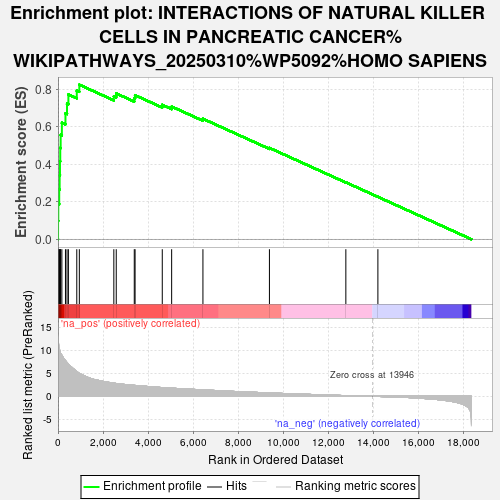
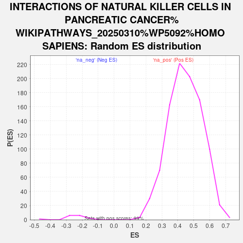

| | | Dataset | ranked_genes |
| Phenotype | NoPhenotypeAvailable |
| Upregulated in class | na_pos |
| GeneSet | INTERACTIONS OF NATURAL KILLER CELLS IN PANCREATIC CANCER%WIKIPATHWAYS_20250310%WP5092%HOMO SAPIENS |
| Enrichment Score (ES) | 0.82476074 |
| Normalized Enrichment Score (NES) | 1.8504295 |
| Nominal p-value | 0.0 |
| FDR q-value | 0.0 |
| FWER p-Value | 0.0 |
Table: GSEA Results Summary

Fig 1: Enrichment plot: INTERACTIONS OF NATURAL KILLER CELLS IN PANCREATIC CANCER%WIKIPATHWAYS_20250310%WP5092%HOMO SAPIENS
Profile of the Running ES Score & Positions of GeneSet Members on the Rank Ordered List

Fig 2: INTERACTIONS OF NATURAL KILLER CELLS IN PANCREATIC CANCER%WIKIPATHWAYS_20250310%WP5092%HOMO SAPIENS: Random ES distribution
Gene set null distribution of ES for INTERACTIONS OF NATURAL KILLER CELLS IN PANCREATIC CANCER%WIKIPATHWAYS_20250310%WP5092%HOMO SAPIENS